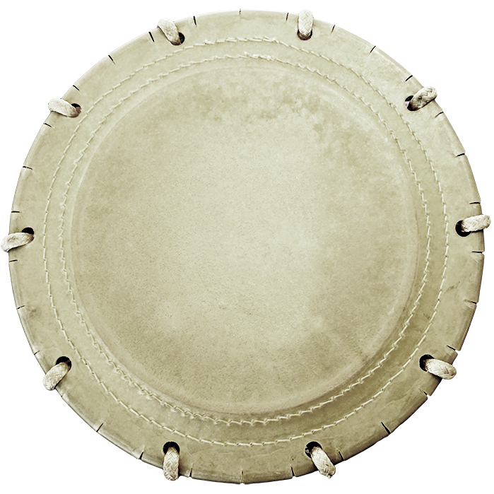
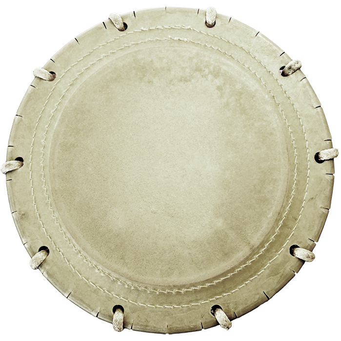

Taiko is the art of traditional Japanese performance drumming. Taiko is often performed in a group ensemble, or kumidaiko. Both traditional and modern songs are played in taiko. The drumsticks used are called bachi and are thicker and longer than normal drumsticks. In a taiko ensemble, various types of drums and instruments may be used— for example, a nagadaiko.
 
